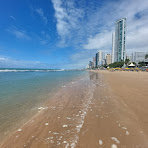
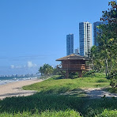
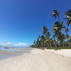

Uma cidade de contrastes, arte e, acima de tudo, praias encantadoras. Apelidada de "Veneza Brasileira ou Hollywood Brasileira” Recife, capital do estado de Pernambuco, tem um patrimônio cultural invejável e uma história cheia de influências. O antigo se une ao moderno. Portugueses, espanhóis, holandeses e franceses das colônias deixaram suas marcas na cidade, incluindo museus, fortalezas, pontes, monumentos e edifícios neoclássicos. Há também a natureza com áreas protegidas onde você pode relaxar e aprender sobre a flora local, como o Parque Dona Lindu projetado pelo renomado arquiteto Oscar Niemeyer, um espaço multifuncional com esculturas como a galeria de arte Janete Costa, sem falar do teatro Luiz Mendoça e outras atrações, como pistas de skate, área de lazer infantil e muitos eventos nos fins de semana. O verdadeiro tesouro, no entanto, são as maravilhosas praias urbanas, com seu mar claro, areias brancas e o sol do Brasil.
Uma mistura irresistível que inspirou os maiores intérpretes da música brasileira, como Caetano Veloso ou Toquinho, e que atrai milhões de visitantes todos os anos. Um paraíso para aqueles que amam o mergulho: há mais de uma centena de naufrágios subaquáticos em que se pode descobrir e admirar os microcosmos que se formaram ao longo dos anos. Entre as praias imperdíveis, é claro, a famosa Praia de Boa Viagem, um verdadeiro símbolo da cidade, mas além da Área de Pina. Também vale a pena visitar é a região da ilha de Itamaracá na costa norte caracterizada por um mar calmo e pacífico, com belas praias. Você só precisadescobrir toda essa beleza, seguindo o nosso guia sobre as 10 praias mais bonitas.
Praia de Porto de Galinhas
"Sem tráfego agitado, sem vida noturna excessiva, apenas relaxamento e olhos abertos para admirar a sua beleza. E se você não quiser nem manter os olhos abertos, aproveite para descansar em uma rede nas águas transparentes e quentes do Atlântico." Um viajante entusiasta descreve brevemente a Praia do Porto de Galinhas, a joia do Recife. Uma instituição que foi eleita a "Melhor Praia Brasileira" oito vezes seguidas por leitores da revista brasileira Voyage& Tourism. Os principais motivos são simples: a beleza de piscinas naturais (as mais próximas da costa em todo o Brasil), trilhas naturais, infra-estrutura hoteleira e proximidade com uma grande cidade (Recife) e seu aeroporto. Esta praia de águas cristalinas é uma das mais visitadas do Brasil. É um ótimo lugar para mergulhar, fazer snorkel e caminhadas ao longo da costa de areia branca. Aqui você pode desfrutar plenamente de uma vista espetacular do Atlântico.
O nome se refere ao período da Escravidão e era uma espécie de codinome. Os escravos, que chegavam aterrorizados, ficavam na verdade escondidos caixas destinadas às galinhas e eram anunciados com a frase “Há novas galinhas” para não levantar suspeitas e controles governamentais após a abolição da escravidão. Os escravos eram muito demandados como trabalhadores para cultivar terras nessa região.
Praia da Boa Viagem

Águas cristalinas e mansas, coqueiros que se destacam e enriquecem a paisagem: essa é a praia de Boa Viagem. A maioria dos hotéis, restaurantes e casas noturnas estão concentrados aqui, bem como lojas de artesanato. Seu nome significa um desejo que lhe trouxe sorte, pois é por muitos considerada a praia urbana mais bonita do mundo. Você não fica entediado nem um segundo por aqui. Você pode relaxar na areia e fazer caminhadas relaxantes ou longas corridas ao longo dos seus 7 quilômetros de costa. A única ressalva é não entrar muito no fundo do mar para evitar ataques de tubarões. Ambientalistas dizem que a razão para a proliferação dos animais pode ser a destruição do ecossistema costeiro da região, causada por barcos de pesca que se aproximam cada vez mais da costa.
Aqueles que querem seguir apreciando a vista, talvez em um lugar menos lotado, pode ir para Jaboatão e Candeias: são extensões da praia de Boa Viagem, ao sul de Recife. A praia de Boa Viagem também oferece a possibilidade de provar especialidades locais. Os vendedores ambulantes oferecem de tudo: caldo de feijão, queijos e frutos do mar frescos. Eles podem ser combinados com água de coco verde ou a clássica Caipirinha (uma mistura com cachaça, açúcar e limão).
Praia de Pina

É uma das praias mais populares e visitadas por turistas no litoral do Recife, capital do estado de Pernambuco e é uma continuação da praia de Boa Viagem. Os ingredientes são sempre deliciosos e agradáveis: areia dourada, piscinas naturais e águas verdes calmas e quentes, feita sob medida para crianças. O cenário é celestial e dominado por coqueiros que ficam localizados perto de edifícios residenciais e comerciais. A Praia de Pina é adequada para esportes aquáticos, como okite surf. Há áreas na praia onde você também pode praticar tênis, futebol e passear por uma trilha ideal para quem gosta de caminhar. Os amantes de duas rodas podem aproveitar a brisa e fazer um passeio ao longo da ciclovia presente em toda a costa. Outra ideia é levar as crianças para um passeio de skate. Muitas vezes, a atmosfera fica colorida com grupos de jovens que voltam das festas e aproveitam o nascer do sol para deitar na praia. Os moradores a consideram um bom destino para passar um bom dia na praia, tanto em família quanto entre amigos. Não faltam lugares para comer e compartilhar, que vão desde bares a restaurantes, passando por hotéis, pousadas onde você pode se regalar com peixes e especialidades locais.
Praia dos Carneiros

A beleza às vezes tem traços ríspidos e pode não ser uma qualidade que salta aos olhos imediatamente, mas deve ser buscada e valorizada com paciência. As dificuldades de acesso à Praia dos Carneiros provavelmente preservaram o seu charme intacto por muito tempo. De Recife, você deve viajar mais de 100 quilômetros para visitar outra candidata à praia mais bonita do Brasil. Localizada na cidade de Sant'agostino, as opções são sempre incríveis: águas cristalinas, calmas e quentes, ideal para os amantes de Snorkeling ou mesmo para um banho de mar único e relaxante. Mas você também pode organizar passeios a cavalo e de catamarã nas piscinas naturais. E a natureza é um dos pontos fortes da área. A região é cercada por rochas, bela vegetação e mantém esse aspecto envolvente e um pouco selvagem. Segundo várias lendas, seu nome vem de um dos antigos proprietários da área, o Sr. José Henrique Carneiros. Nas proximidades, você também pode mergulhar na história e na arquitetura, pois há uma igreja de 1700, aos pés do mar. Uma estrutura simples, mas de grande impacto, dedicada a São Bento.